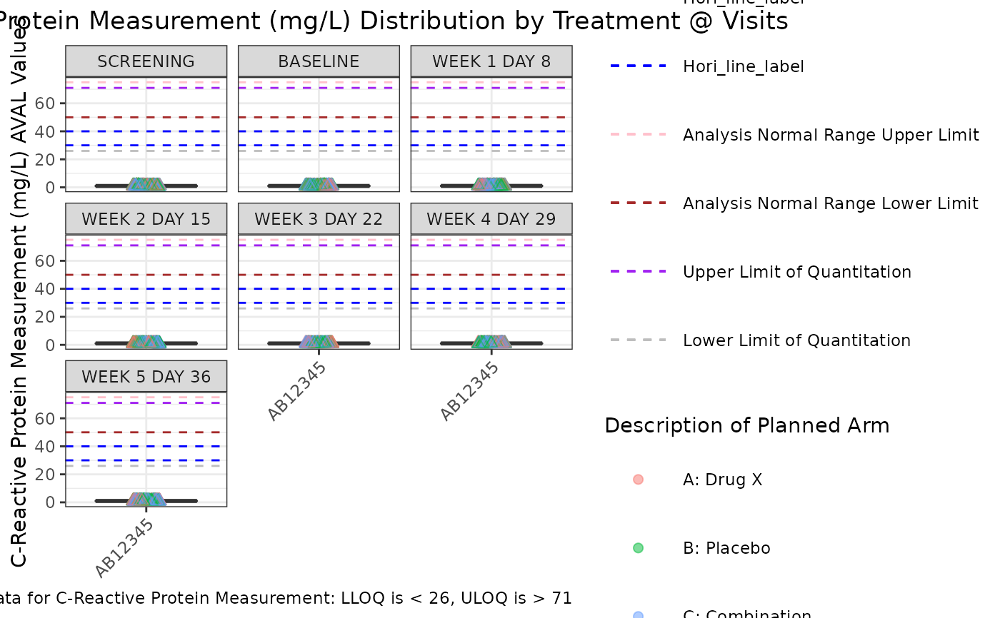

g_boxplot.RdA box plot is a method for graphically depicting groups of numerical data through their quartiles. Box plots may also have lines extending vertically from the boxes (whiskers) indicating variability outside the upper and lower quartiles, hence the term box-and-whisker. Outliers may be plotted as individual points. Box plots are non-parametric: they display variation in samples of a statistical population without making any assumptions of the underlying statistical distribution. The spacings between the different parts of the box indicate the degree of dispersion (spread) and skewness in the data, and show outliers. In addition to the points themselves, they allow one to visually estimate various L-estimators, notably the interquartile range, midhinge, range, mid-range, and trimean.
g_boxplot( data, biomarker, param_var = "PARAMCD", yaxis_var, trt_group, xaxis_var = NULL, loq_flag_var = "LOQFL", loq_legend = TRUE, unit = NULL, color_manual = NULL, shape_manual = NULL, box = TRUE, ymax_scale = NULL, ymin_scale = NULL, dot_size = 2, alpha = 1, facet_ncol = NULL, rotate_xlab = FALSE, font_size = NULL, facet_var = NULL, hline_arb = numeric(0), hline_arb_color = "red", hline_arb_label = "Horizontal line", hline_vars = character(0), hline_vars_colors = "green", hline_vars_labels = hline_vars )
| data | ADaM structured analysis laboratory data frame e.g. ADLB. |
|---|---|
| biomarker | biomarker to visualize e.g. IGG. |
| param_var | name of variable containing biomarker codes e.g. PARAMCD. |
| yaxis_var | name of variable containing biomarker results displayed on Y-axis e.g. AVAL. |
| trt_group | name of variable representing treatment trt_group e.g. ARM. |
| xaxis_var | variable used to group the data on the x-axis. |
| loq_flag_var | name of variable containing LOQ flag e.g. LOQFL. |
| loq_legend | `logical` whether to include LoQ legend. |
| unit | biomarker unit label e.g. (U/L) |
| color_manual | vector of color for trt_group |
| shape_manual | vector of shapes (used with loq_flag_var) |
| box | add boxes to the plot (boolean) |
| ymax_scale | maximum value for the Y axis |
| ymin_scale | minimum value for the Y axis |
| dot_size | plot dot size. |
| alpha | dot transparency (0 = transparent, 1 = opaque) |
| facet_ncol | number of facets per row. NULL = Use the default for facet_wrap |
| rotate_xlab | 45 degree rotation of x-axis label values. |
| font_size | point size of tex to use. NULL is use default size |
| facet_var | variable to facet the plot by, or "None" if no faceting required. |
| hline_arb | ('numeric vector') value identifying intercept for arbitrary horizontal lines. |
| hline_arb_color | ('character vector') optional, color for the arbitrary horizontal lines. |
| hline_arb_label | ('character vector') optional, label for the legend to the arbitrary horizontal lines. |
| hline_vars | ('character vector'), names of variables `(ANR*)` or values `(*LOQ)` identifying intercept values. The data inside of the ggplot2 object must also contain the columns with these variable names |
| hline_vars_colors | ('character vector') colors for the horizontal lines defined by variables. |
| hline_vars_labels | ('character vector') labels for the legend to the horizontal lines defined by variables. |
ggplot object
Balazs Toth
Jeff Tomlinson (tomlinsj) jeffrey.tomlinson@roche.com
# Example using ADaM structure analysis dataset. library(scda) #> ADSL <- synthetic_cdisc_data("latest")$adsl ADLB <- synthetic_cdisc_data("latest")$adlb var_labels <- lapply(ADLB, function(x) attributes(x)$label) ADLB <- ADLB %>% mutate(AVISITCD = case_when( AVISIT == "SCREENING" ~ "SCR", AVISIT == "BASELINE" ~ "BL", grepl("WEEK", AVISIT) ~ paste( "W", trimws( substr( AVISIT, start = 6, stop = stringr::str_locate(AVISIT, "DAY") - 1 ) ) ), TRUE ~ NA_character_)) %>% mutate(AVISITCDN = case_when( AVISITCD == "SCR" ~ -2, AVISITCD == "BL" ~ 0, grepl("W", AVISITCD) ~ as.numeric(gsub("\\D+", "", AVISITCD)), TRUE ~ NA_real_)) %>% mutate(ANRLO = 50, ANRHI = 75) %>% rowwise() %>% group_by(PARAMCD) %>% mutate(LBSTRESC = ifelse( USUBJID %in% sample(USUBJID, 1, replace = TRUE), paste("<", round(runif(1, min = 25, max = 30))), LBSTRESC)) %>% mutate(LBSTRESC = ifelse( USUBJID %in% sample(USUBJID, 1, replace = TRUE), paste( ">", round(runif(1, min = 70, max = 75))), LBSTRESC)) %>% ungroup() attr(ADLB[["ARM"]], "label") <- var_labels[["ARM"]] attr(ADLB[["ANRLO"]], "label") <- "Analysis Normal Range Lower Limit" attr(ADLB[["ANRHI"]], "label") <- "Analysis Normal Range Upper Limit" # add LLOQ and ULOQ variables ADLB_LOQS <- goshawk:::h_identify_loq_values(ADLB) ADLB <- left_join(ADLB, ADLB_LOQS, by = "PARAM") g_boxplot(ADLB, biomarker = "CRP", param_var = "PARAMCD", yaxis_var = "AVAL", trt_group = "ARM", loq_flag_var = "LOQFL", loq_legend = FALSE, unit = "AVALU", shape_manual = c("N" = 1, "Y" = 2, "NA" = NULL), facet_var = "AVISIT", xaxis_var = "STUDYID", alpha = 0.5, rotate_xlab = TRUE, hline_arb = c(30, 40), hline_arb_color = "blue", hline_arb_label = "Hori_line_label", hline_vars = c("ANRHI", "ANRLO", "ULOQN", "LLOQN"), hline_vars_colors = c("pink", "brown", "purple", "gray"), hline_vars_labels = c("A", "B", "C", "D") )